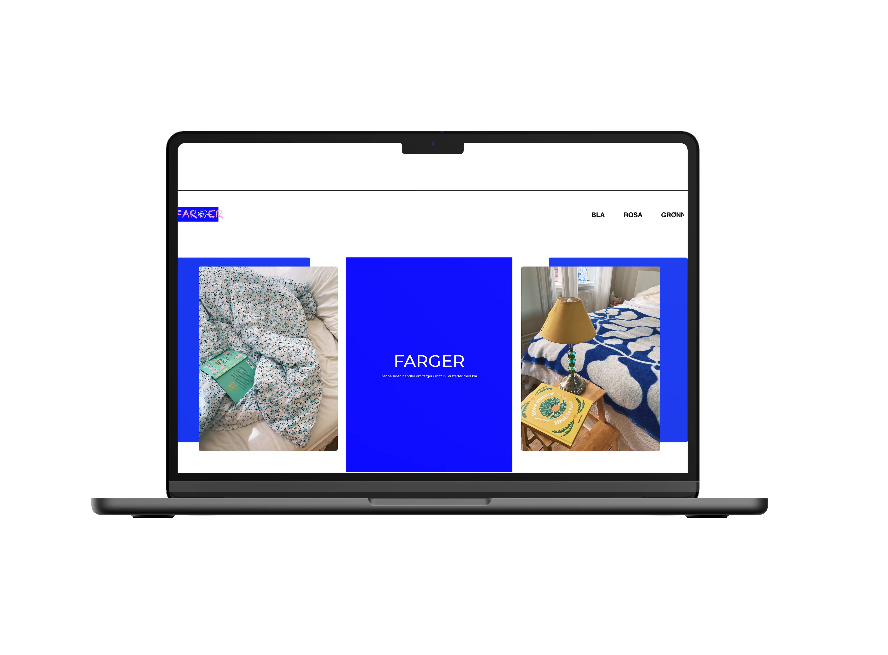
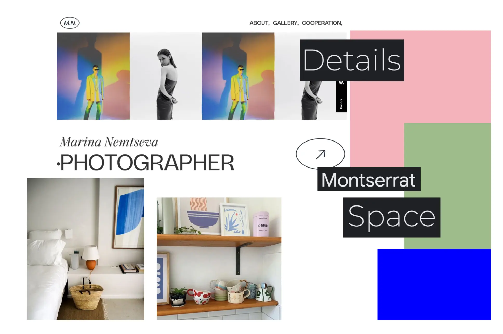
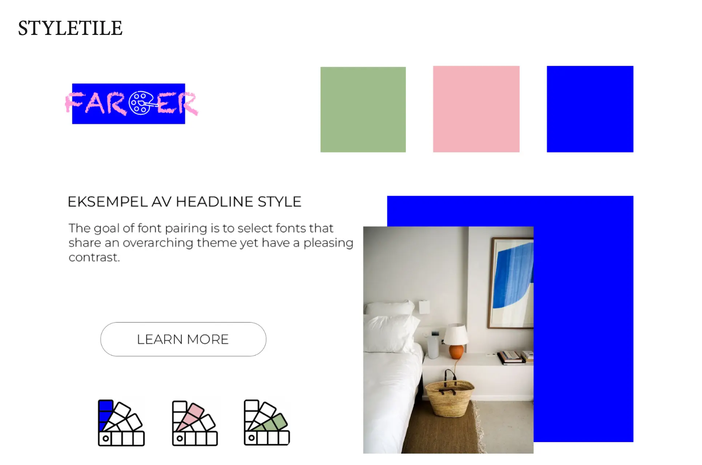

I denne oppgaven lærte jeg måten multimediedesignere jobber på. Det er viktig å fokusere på research og design før man kommer i gang med et prosjekt. I moodboard samlet jeg farger, bilder, font og layout av eksterne websites som jeg eller min kunde ønsket å ha i et prosjekt. Jeg lagde en styletile som inneholdt designelementer og farger for å gi et inntrykk av hvordan website skal føle ut. Jeg lagde prototype og wireframes som kunne hjelpe meg med jobben fremover (og for at kunden kan se om min visjon stemmer med hans/hennes).
Jeg lærte om Flex Layout. Denne måten gjør det enklere å designe fleksibel responsiv layoutstruktur uten å bruke float eller positioning. Jeg valgte å bruke flex layout på noen områder i oppgaven, mens jeg også brukte grid layout som jeg lærte i forrige oppgave. Det sværeste var å lage forside, siden jeg valgte å ha to bilder ovenfor hinnanden. Jeg løste det ved å bruke span funksjon.
EMNESITE
TEMA: FARGER


